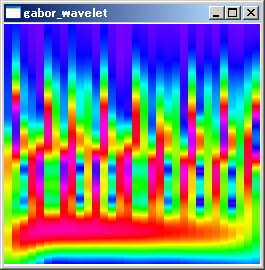
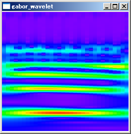

更新日時：2010/5/21
C/C++言語でガボールウェーブレット変換により時間周波数解析を行うサンプルプログラムです。
解析対象の音声ファイルは、ここで公開されているa.wavを使用しました。
サンプルのため、対応しているwavファイルのフォーマットは、チャンネル数がモノラルで、ビット／サンプルが32bitのみです。
サンプルソースの主要部分は下の方に載せています。全ソースはこちらにあります。ビルド済みの実行ファイルとVisual C++ 2008 Express Edition用のプロジェクトはこちらからダウンロードできます。
ガボールウェーブレット変換の定義は、次式で与えられます。
パラメータ a と b はそれぞれ周波数の逆数、時間に対応します。σは定数で、σを大きくとると周波数の分布が正確になり、小さくとると時間的な変化が正確になります。サンプルプログラムでは、σ=1としています。ωは角速度で、a を周波数の逆数とする場合、ω=2π です。
サンプリングされた離散データの場合、時間tはt=m/Fs（m：サンプル番号、Fs：サンプリング周波数）で変換します。
積分範囲は上式では全区間となっていますが、ガボールのマザーウェーブレット(上式ψ(t))は、下図の通り t=0 を中心にして正負両方向で0に漸近しています。そのため、ほぼ0になるまでの区間のみを積分範囲としても実際は問題ありません。サンプルプログラムでは、0.01までの区間を積分範囲としています。
時間周波数解析を行うには、パラメータ a と b を変化させてWT(b,a)を算出します。サンプルプログラムでは、音声ファイルの中心から2048個のサンプルを抜き出して、時間を64サンプル間隔で変化させながら、周波数110Hzから5オクターブの範囲を25cent単位で解析しています。解析した結果は、スペクトログラムで表示しています。
スペクトログラムを表示する際、振幅を色に変換しますが、色への変換は、HSV色空間のHを振幅として、RGB色空間への変換を行っています。
実行結果は、下図のようになります。
実行結果
赤色で表示されている周波数帯が、音声の基本周波数を示しています。中間の時間付近で、184.997211Hzとなっていました。ケプストラム法により算出した基本周波数に近い値になっています。
解説で述べた通りσにより時間分解能と周波数分解能が変化します。σを変化させたときに、時間周波数解析の結果がどのように変化するかを調査してみました。
| σ=0.5 |
σ=1.0 |
|  |
|
| σ=1.5 |
σ=2.0 |
| σ=2.5 |
σ=3.0 |
|  |
σ=0.5では、周波数分布が広がりすぎて分解能が十分でないことが確認できます。中央の時間で周波数分布をグラフにしたものを以下に示します。
| σ=0.5 |
σ=1.0 |
| σ=1.5 |
σ=2.0 |
| σ=2.5 |
σ=3.0 |
σ=0.5〜1.0では、高周波数の帯域で倍音が表れていません。σを大きくするほど倍音がきれいに表れています。しかし、σを大きくするほど、必要なサンプル数が増えるため、計算時間を考慮して適切なσを選ぶ必要があります。
σにより積分に必要になるサンプル数について調べました。積分範囲は、振幅が0.01までの区間とすると、以下の式で計算できます。
必要なサンプル数は、解析する周波数と、σの値によって異なります。低周波数の方がより長く必要になり、σの値が大きいほど長く必要になります。A1の音階(55Hz)およびA6(1760Hz)の音階を解析するために必要なサンプル数は以下の通りです。サンプリングレート44.1kHzでは、低周波数でサンプル数がかなり大きくなっています。
| 長さ(ms) |
サンプル数 |
||
| サンプルレート8kHz |
サンプルレート44.1kHz |
||
| σ=0.5 |
55 |
442 |
2434 |
| σ=1.0 |
110 |
883 |
4867 |
| σ=1.5 |
166 |
1325 |
7301 |
| σ=2.0 |
221 |
1766 |
9734 |
| σ=2.5 |
276 |
2208 |
12167 |
| σ=3.0 |
331 |
2649 |
14600 |
| 長さ(ms) |
サンプル数 |
||
| サンプルレート8kHz |
サンプルレート44.1kHz |
||
| σ=0.5 |
1.7 |
14 |
77 |
| σ=1.0 |
3.4 |
28 |
153 |
| σ=1.5 |
5.2 |
42 |
229 |
| σ=2.0 |
6.9 |
56 |
305 |
| σ=2.5 |
8.6 |
69 |
381 |
| σ=3.0 |
10.3 |
83 |
457 |
音声ファイルの時間周波数解析結果から音階を判定する場合の適切なσの値について調べました。音階を判定するには、最低でも隣り合う半音を判別できる必要があります。A1、A1#、A4、A4#、A6、A6#の音階をσを変化させて解析した結果は以下の通りです。FFTで解析した結果もあわせて示しています。信号のサンプルレートは8kHz、フレーム長は2048です。調査に使用したMATLAB(Octave)のソースはこれです。
σ=2では、半音の違いを区別できていません。σ=4でも違いがはっきりしません。σ=6以上では半音の違いがはっきり区別できるようになっています。FFTでは、A1付近の半音を区別できていませんが、A4、A6付近ではガボールウェーブレットよりもはっきりと周波数のピークが表れています。一方、ガボールウェーブレットでは、σが同じならどの周波数でも一様な周波数分解能となっていることがわかります。
 iPhoneアプリ VocalPitchMonitor |
 iPhoneアプリ AudioSpectrumMonitor |